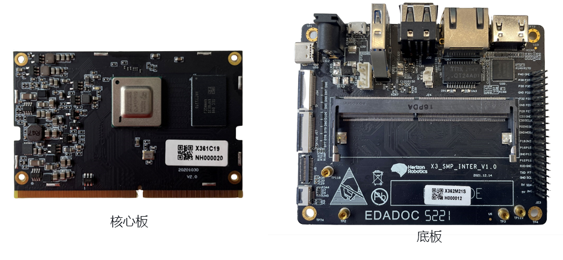
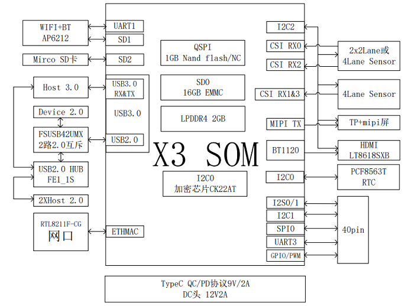
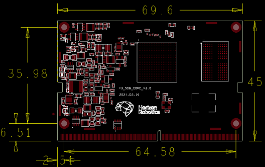
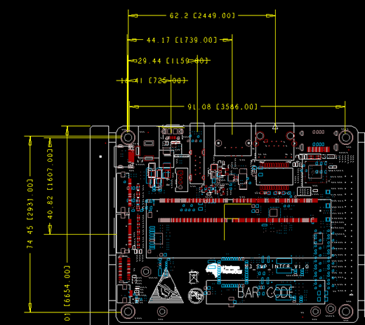
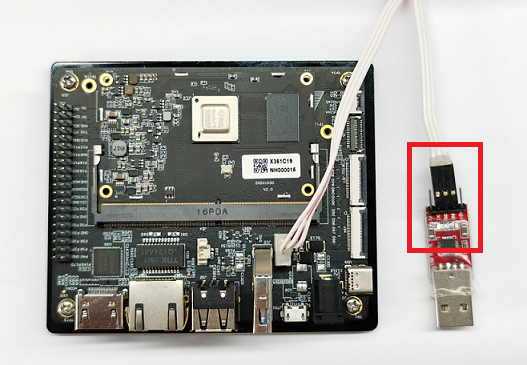

2.1. X3 SDB开发板说明
2.1.1. 概述
地平线X3 SDB开发板套件是集成了地平线X3M AI处理器的开发板形态产品，提供5Tops等效算力(int8)，支持多路摄像头输入，提供丰富的外围硬件接口。开发板通过搭载地平线“天工开物”软件栈，可以满足功能评测、产品开发以及创新预研等多方面需求。
开发板由核心板和底板组成，两者通过DIMM插槽连接，并具有防呆设计，安装方法跟笔记本内存类似，将核心板倾斜45度插入DIMM插槽，然后按压锁止即可。其中核心板作为核心模组，集成了X3最小系统，包括X3芯片、DDR、eMMC及电源模块；底板作为外围接口板，集成了以太网、USB、Wi-Fi、HDMI、MIPI CSI等多种外设接口。

（注：如果您使用的底板和上图有差异，请查阅 X3 SDB v3 开发板接口说明 了解接口差异）
开发套件清单：
12V@2A电源适配器 x1
底板 x1 核心板 x1
串口USB转接板 x1，4PIN转3PIN杜邦线 x1
Camera模组板 x1（选购配件）
自备配件清单：
HDMI视频线一条
RJ-45网线一条
Micro USB数据线一条
2.1.2. 规格参数
关键特性：
| 模块 | 参数 |
|---|---|
| 处理器 | 地平线X3M芯片 |
| CPU | 4核Cortex A53@1.2G |
| BPU | 2核BPU@1.0G，等效5TOPS |
| 存储 | 2GB LPDDR4 3200Mhz，16GB eMMC |
| 摄像头 | MIPI CSI x2，支持双路摄像头接入 |
| 显示 | HDMI x1、MIPI DSI x1，最大支持1080p60 |
| USB | Host：USB 3.0 x1、USB 2.0 x2，Device: Micro USB x1 |
| 有线网络 | 千兆以太网 x1，RJ45接口 |
| 无线网络 | 2.4G Wi-Fi x1，支持802.11 b/g/n、Bluetooth 4.1 |
| 其他接口 | TF卡接口 x1，40 Pin接口 x1 |
| 供电 | 12V DC or USB Type C |
开发板功能框图

核心板尺寸图

底板尺寸图

2.1.3. 组装方法
安装核心板
开发板的核心板和底板通过DIMM插槽连接，并具有防呆设计，具体组装步骤如下：
将核心板倾斜插入底板DIMM插槽中，并沿倾斜方向用力按压核心板。
向下按压核心板，使底板插槽簧片有效锁止核心板。
观察核心板金手指是否有外露，如有外露说明安装不到位，需取下核心板并重复步骤1。
如有亚克力底板，则使用铜柱、螺丝将其与底板组装。
在X3M芯片表面黏贴套件中附送的鳞片散热片。
安装串口线
开发板套件中配套了杜邦线和串口USB转接板，方便用户在PC上使用串口助手对开发板的在线调试。串口线连接方法如下：
将杜邦线白色端插入开发板连接器
将杜邦线黑色端正面朝上插入转接板中间三个插针，参考下图红色框图细节
将转接板USB插入PC，完成串口连接
完成核心板、串口线安装的开发板如下图所示：

对于使用其他型号串口USB转接板的用户，可以按照实际的信号定义来调整安装方式。一般来说，串口USB转接板至少有四个引脚：电源、地、RX、TX，这些引脚跟开发板串口的连接关系如下：
GND，串口转接板的地线，接开发板串口的 GND 针
TXD，串口转接板的输出线，接开发板串口的 TX 针
RXD，串口转接板的输入线，接开发板串口的 RX 针
3.3V，电源，不需要连接
上电确认
首先在PC机上打开串口工具，并连接开发板串口，串口工具配置方法可参考2.2.1章节。然后将12V电源接入开发板，如果debug串口同步输出log信息并进入登录界面，则说明安装正常。如果串口无log信息，请按如下步骤进行排查：
检查核心板、底板安装，确认核心板金手指是否有明显外露。
检查串口线与串口USB转接板线序，注意杜邦线黑色端正面朝上插入转接板中间三个插针。
检查PC端串口工具配置是否正常，配置方法可参考2.2.1章节。